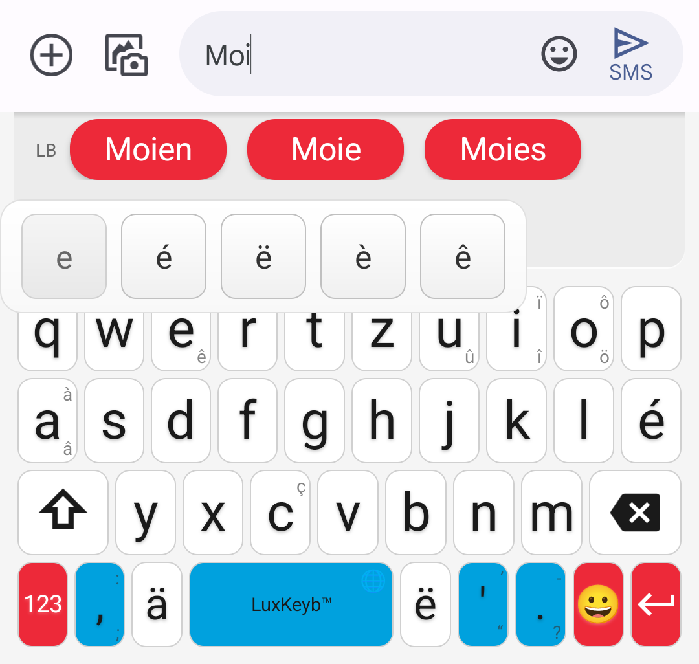
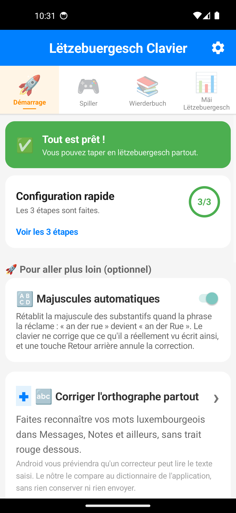
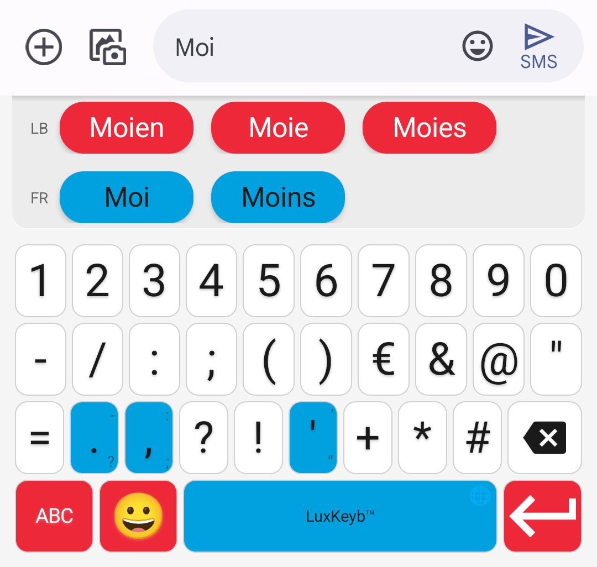

POTOMITAN™
« Mir wëlle bleiwe wat mir sinn. »
Le dictionnaire de ce clavier n'est pas une liste figée : il est reconstruit à chaque publication à partir de deux corpus publics — LuxAlign, 180 342 phrases de presse, et LETZ, les phrases d'exemple du Lëtzebuerger Online Dictionnaire. La langue qu'il propose est celle qui s'écrit, pas celle d'un dictionnaire arrêté une fois pour toutes.

Flashez le code
100 %
gratuit zéro pub
gratuit zéro pub
Comment nous aider
- Rejoignez le test sur Google Play
- Parlez-en autour de vous
- Signalez un mot qui manque
Web famibelle.github.io/LuxKeyb
Kontakt contact@potomitan.io
Gratuit · Open source (MIT) · Zéro publicité · 100 % hors ligne
Lëtzebuergesch Clavier est un projet citoyen publié par Potomitan™. Aucune collecte de données personnelles : l'application n'a aucune permission réseau et le clavier fonctionne entièrement sur l'appareil.
Däi Lëtzebuergesch, op dengem Telefon.  · https://potomitan.io/
· https://potomitan.io/
· https://potomitan.io/Pourquoi
Pourquoi un clavier luxembourgeois ?
- Votre téléphone « corrige » votre lëtzebuergesch en allemand ou en français.
- Le ë et le ä se cachent dans un menu d'accents, à chaque mot.
- Vous hésitez sur l'orthographe à chaque message.
- Ce clavier est fait pour vous.


À l'intérieur : les diacritiques en accès direct, un correcteur qui vaut pour toutes vos applications, trois jeux de vocabulaire et huit niveaux de progression. Retournez le dépliant.
Enfin écrire en lëtzebuergesch
sans se battre !
38 410 motsun dictionnaire luxembourgeois régénéré à partir de corpus publics, pas une liste figée
QWERTZla disposition des claviers physiques du pays, avec é, ä, ë et l'apostrophe en accès direct
0 réseauaucune permission Internet : rien de ce que vous tapez ne quitte le téléphone
Flashez le codeEssayez-le d'abord dans le navigateur100 % gratuit
C'est parti
Installation en 4 étapes
-
Ouvrez le site, c'est gratuit
Flashez ce codeVisez-le avec l'appareil photo : le site s'ouvre et le clavier s'essaie dans le navigateur, sans rien installer
- Installez l'applicationDeux chemins depuis le site : rejoindre le test sur Google Play — installation et mises à jour comme n'importe quelle autre application — ou télécharger l'APK directement.
- Activez le clavier dans les réglagesUn bouton de l'application mène droit au bon écran Android. Le système affiche alors un avertissement sur la saisie : il est générique, Android le montre pour tout clavier tiers, et celui-ci n'a aucune permission réseau pour envoyer quoi que ce soit.
- Choisissez-le et écrivezLe sélecteur de clavier s'ouvre : choisissez Lëtzebuergesch Clavier et tapez votre premier mot.

Fonctionnalités
Ce qu'il fait pour vous
- Suggestions bilingues : le luxembourgeois d'abord, le français prend le relais pour les emprunts
- é, ä, ë ont leur touche, et les autres diacritiques viennent par appui long
- Il comprend même sans les accents : « letzebuergesch » propose « lëtzebuergesch »
- Un correcteur système : vos mots cessent d'être soulignés en rouge dans vos autres applications
- Trois jeux de vocabulaire : Wuertsich, Wuertmix et Wuertriet

La prédiction du mot suivant s'appuie sur 26 172 contextes : après un espace, le clavier propose la suite d'après les deux mots précédents, pas seulement le dernier.
Motivation
Suivez votre progression
Chaque mot que vous employez fait avancer votre niveau, selon la part du dictionnaire que vous avez déjà utilisée — d'Ufänker à Sproochenmeeschter. Seuls les mots déjà présents dans le dictionnaire sont comptés : un mot de passe ou un nom propre n'y figure pas, et n'est donc jamais enregistré.
🌍
🌱
🔥
💎
🦊
🦁
👑
🧙
UfänkerSproochenmeeschter

Installez maintenantChaque testeur rapproche le clavier de sa sortie publique100 % gratuit